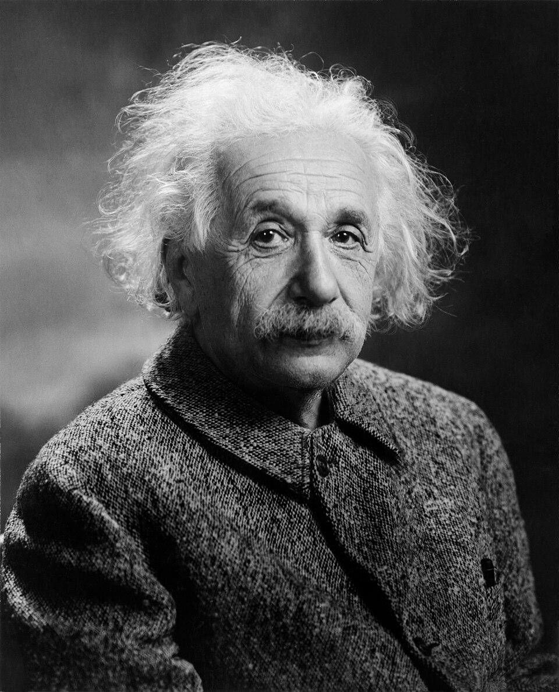
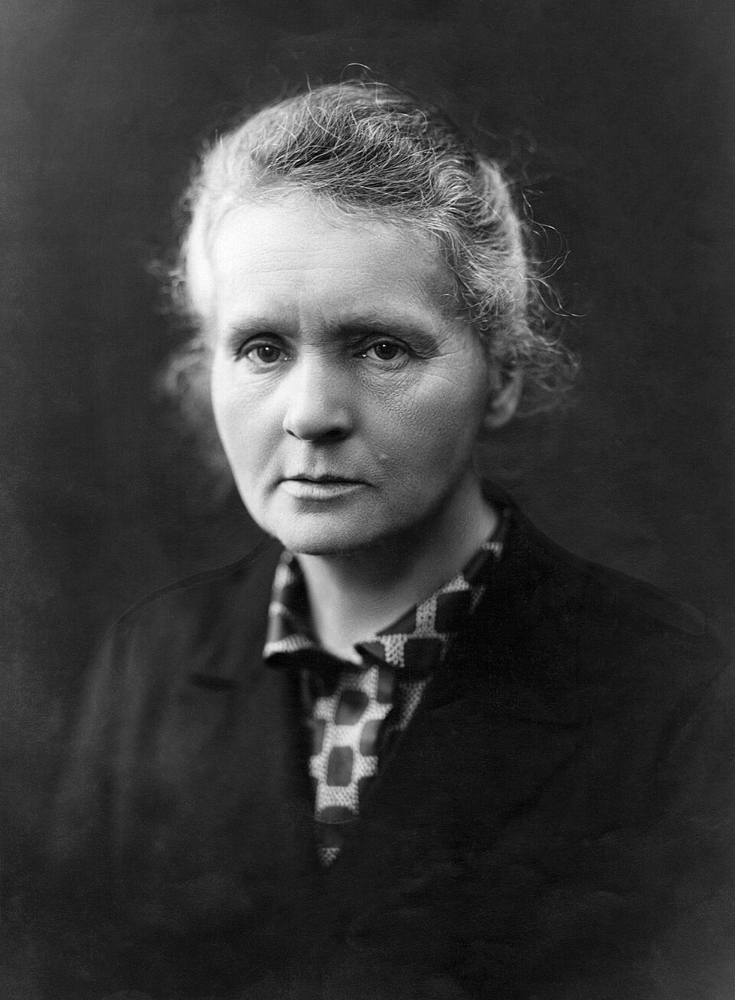
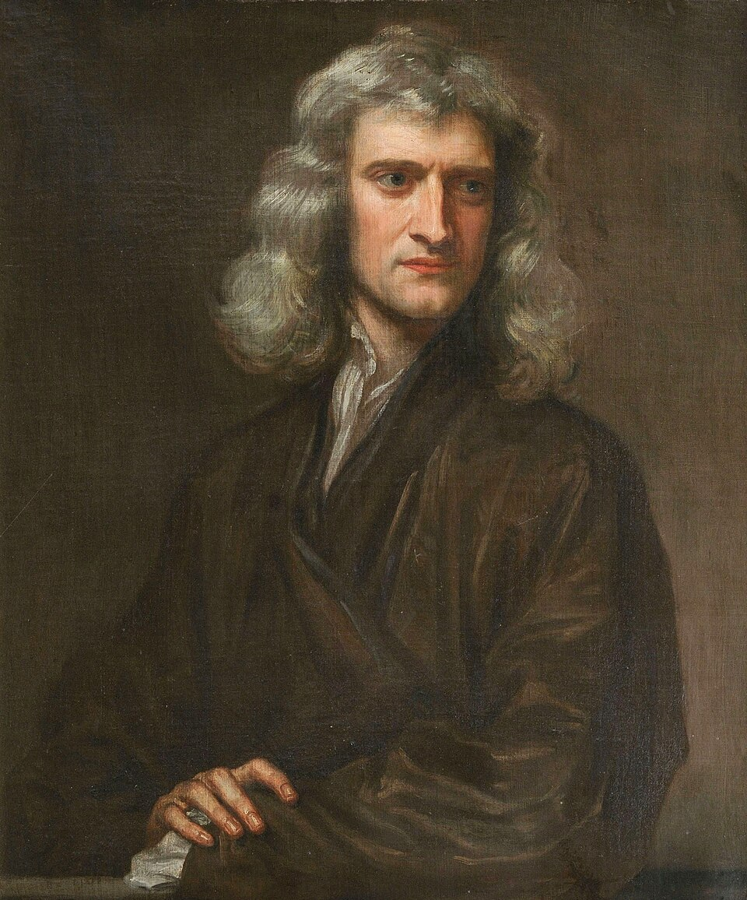
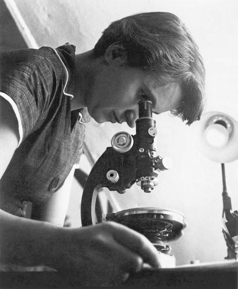

Here are some of the greatest minds in science.The discoveries shaped the world we live in today.

Famous for the thery of relatvity E=mc2
Leam more:wikipedia

Discovered radumand polonium,pioneered research in radioactivity.
Leam more:wikipedia

Known for laes of motion and gravity.
Formula F=ma(Force=miss*acceleraion)
Leam more:wikipedia

Contributed to the discovery of DNA structure.
DNA model:A-T,G-C base pairs held by hydogen bonds in adondle helix
H2O structre was part of her X-ray crystallogaphy studies.
Leam more:wikipedia